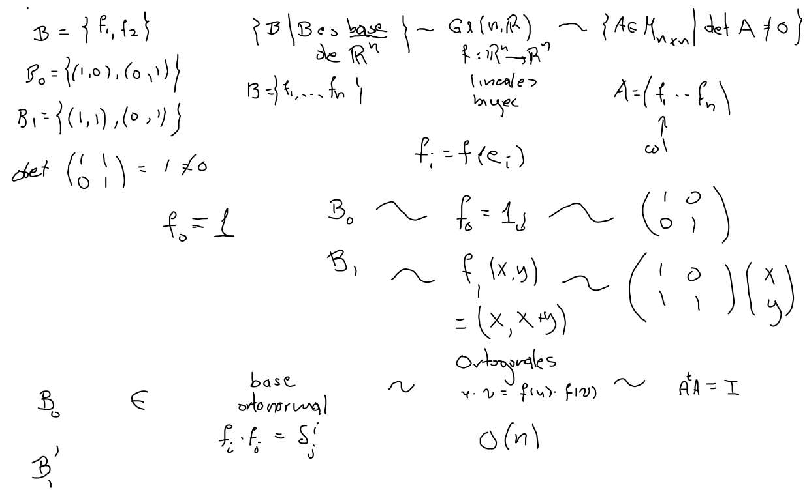
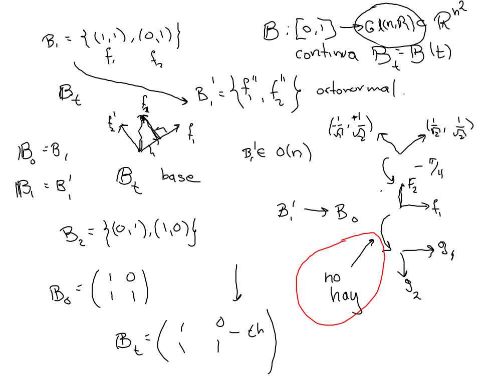
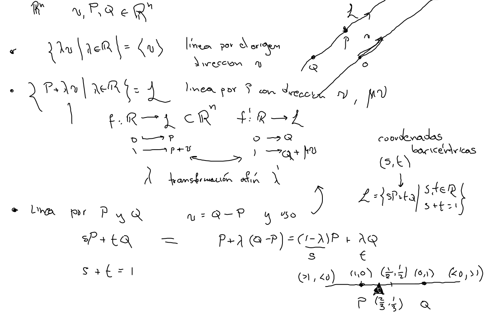

Parámetros y coordenadas
Ejemplo
{B∣B base de Rn}=Gl(n,R)
{B∣B base ortonormal de Rn}=O(n)
SO(n)={A∈Mn×n∣AtA, det(A)=1}⊂O(n)


Líneas
Dados v,P,Q∈Rn, podemos encontrar, la línea tal que:
- Pasa por el origen con dirección v ⟨v⟩={λv∣λ∈R}
- Tiene dirección v y pasa por P L={P+λv∣λ∈R}
- Pasa por P y Q
- Caso anterior con v=Q−P
- Coordenadas baricéntricas en términos de P y Q L={sP+tQ∣s,t∈R,s+t=1}
